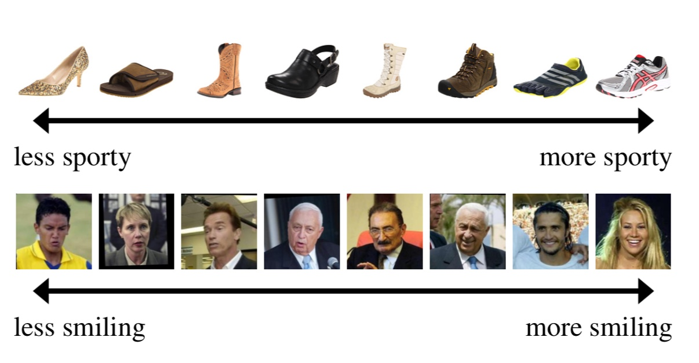
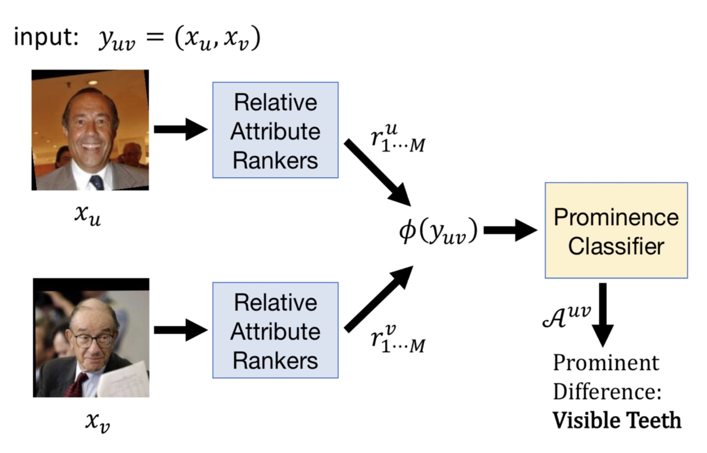
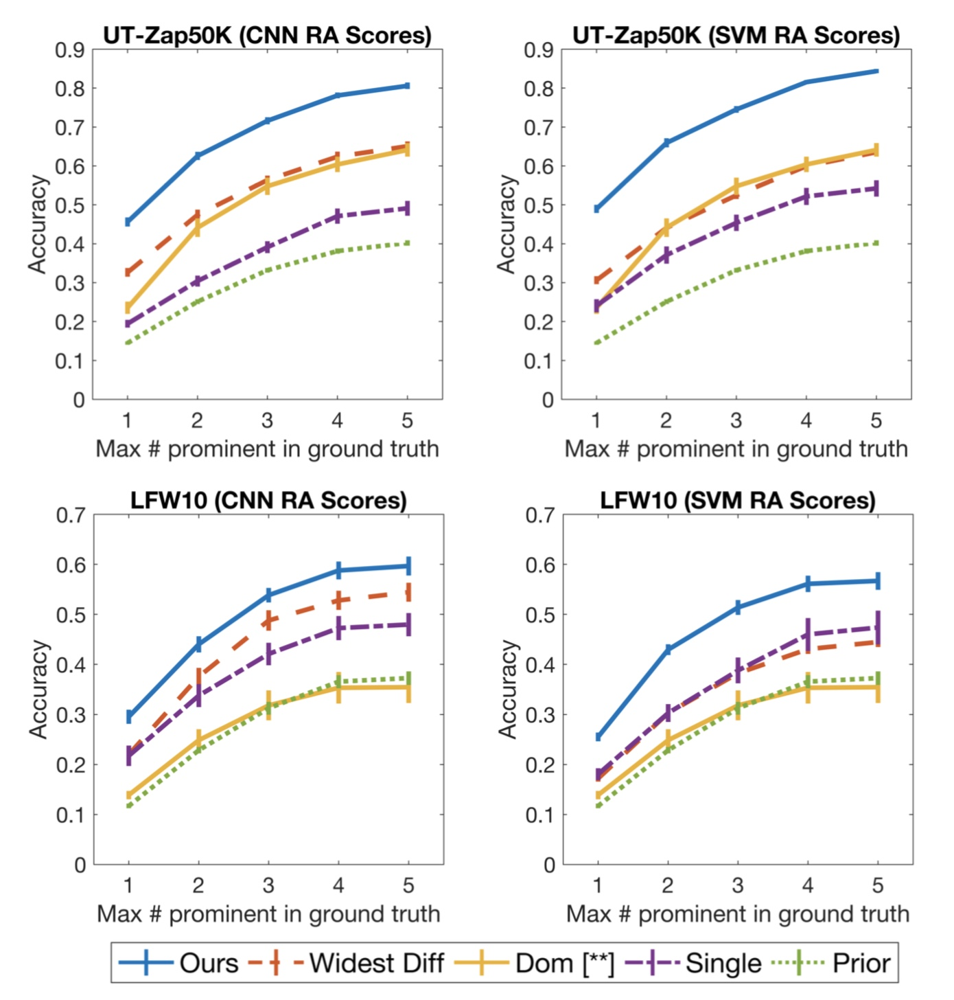
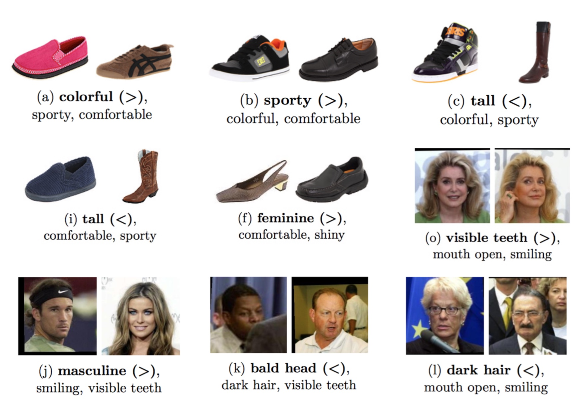
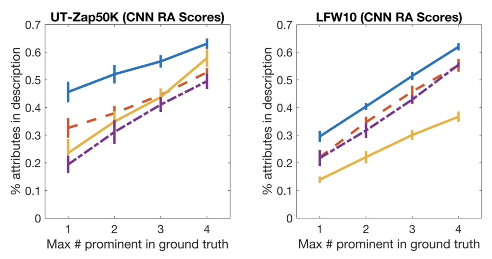
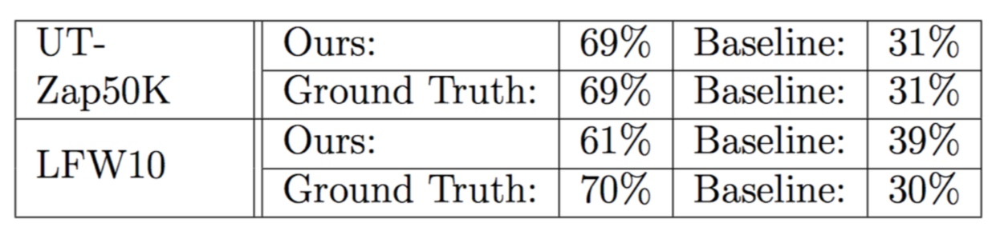
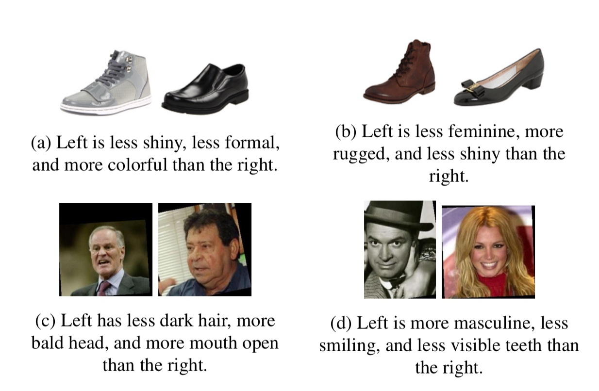
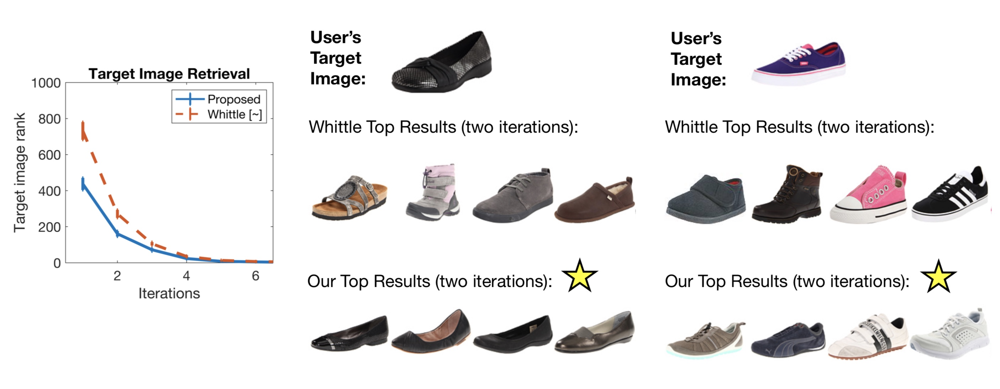

Relative attribute models can compare images in terms of all detected properties or attributes, exhaustively predicting which image is fancier, more natural, and so on without any regard to ordering. However, when humans compare images, certain differences will naturally stick out and come to mind first. These most noticeable differences, or prominent differences, are likely to be described first. In addition, many differences, although present, may not be mentioned at all. In this work, we introduce and model prominent differences, a rich new functionality for comparing images. We collect instance-level annotations of most noticeable differences, and build a model trained on relative attribute features that predicts prominent differences for unseen pairs. We test our model on the challenging UT-Zap50K shoes and LFW10 faces datasets, and outperform an array of baseline methods. We then demonstrate how our prominence model improves two vision tasks, image search and description generation, enabling more natural communication between people and vision systems.
When people compare images, certain visual differences stick out, and are described first. These prominent differences are most noticeable, and are likely to be described first, while other differences, although present and true, are likely stated later or not at all. Prominent differences affect our perception of images (ex. what stands out when comparing shopping items?), and influence human input to vision systems (ex. labeling, feedback to an interactive system).
In this work, we introduce and model prominent differences, a rich new functionality for comparing images. We collect annotations of most noticeable differences, and build a model trained on relative attributes that predicts prominent differences for unseen pairs. We evaluate on two challenging datasets and outperform an array of baseline methods. Finally, we demonstrate how prominent differences can be used to enhance two vision tasks, image search and description generation.
Relative attributes [Parikh and Grauman 2011] express an image's attribute strength with respect to other images, and enable visual comparisons between images. Relative attribute rankers are models that can rank images based on their attribute strength scores, and use sets of labeled images pairs for learning.
Relative Attribute Examples: Relative attributes such as sporty and smiling can rank images across a range of strengths.
Given an image pair, we obtain the relative attribute scores for each image using a relative attribute ranker, and combine these scores into a symmetric, pairwise representation for the pair. We train a multiclass classifier on this feature representation using labeled prominent difference pairs. Given a new image pair, we use this trained model to predict prominent difference(s). See the paper for more detail.
Inference Pipeline: Our approach pipeline for prominent difference prediction, as described above.
We evaluate on two different image datasets, collecting prominent difference annotations for both:
We benchmark prominence prediction accuracy compared to prior work [Turakhia and Parikh 2013 **] and several baseline approaches. We outperform prior work and all baselines, on both of our datasets and for both attribute rankers used.
Quantitative Results: Prominence prediction accuracy results for the two datasets (top, bottom) and either SVM or CNN-based attribute rankers (left, right). Our approach outperforms all baselines on both datasets and for both rankers.
Qualitative Results: Prominence predictions made by our approach. Predicted most prominent attribute in bold, followed by next two most confident attributes.
We apply prominent differences to generate textual image descriptions comparing images. When humans compare images, they state prominent differences first, and will not name all true differences for a pair. Previous work generates descriptions comparing images in terms of all attributes, in an arbitrary order. In our approach, we generate descriptions containing the most prominent differences for a pair. We demonstrate that our approach generates descriptions that are perceived as more natural and appropriate.
 Description Quantitative Results: Offline description generation results on top, human study results on bottom. Our generated descriptions contain more prominent differences than other approaches. In the human study, judges perceive our generated descriptions as more natural and appropriate.
Description Qualitative Results: Descriptions generated by our model highlight the prominent differences that stand out most between the images.
We incorporate prominent differences into WhittleSearch [Kovashka et al. 12 ~], an interactive image search framework where users provide relative attribute feedback through comparisons (e.g., I would like images that are more formal than X). WhittleSearch ranks images by the number of feedback constraints satisfied. A problem with this apporach is that many images satisfy all feedback, and appear equally relevant to the system. When users provide relative feedback to the system, they are likely to provide prominent differences. Thus, in our approach, we order images by their prominence strength with user feedback. Our approach produces significantly more relevant results, yet requires no additional user feedback. 
Image Search Results: Quantitative results on left, displaying target image rank at each iteration (lower rank is better). On right, qualitative search results with user target images, followed by WhittleSearch top results and our results. Our approach produces more relevant search results using the same amount of user feedback.
Dataset is available for download here.
S. Chen and K. Grauman. "Compare and Contrast: Learning Prominent Visual Differences". In CVPR, 2018. [bibtex]
@InProceedings{prominentdifferences,
author = {S. Chen and K. Grauman},
title = {Compare and Contrast: Learning Prominent Visual Differences},
booktitle = {CVPR},
month = {June},
year = {2018}
}